공정설계입문 독서노트
Ch1:
Introduction 화학공학은 물리적, 화학적 변화에 기반을 둔 공정을 만들어낸다. 공정을 만든다는 것은 설계(Design)와 분석(Analysis)를 한다는 뜻이다.
ch2.디자인
공정설계라는 것은 디자인과 분석으로 구성이 된다. 이러한 공정 설계를 나타내기 위한 방법으로 process flow sheet(공정흐름도)가 고안되었다. 공정흐름도는 unit operation으로 구성된다.
(Unit operation: 공정은 step by step으로 일련의 과정을 거쳐 일어난다. 이때 거쳐가는 노드에 해당하는 것이 Unit operation이다. 대표적인 예시로 *distillation, *separator 등 이 있다. Unit은 single이라는 의미로, 특정한 목적 하나를 달성하기 위해 하나의 작용을 일으키는 하나의 기구이다. 이는 직사각형이나 원과 같은 간단한 도형으로 표시 된다.)
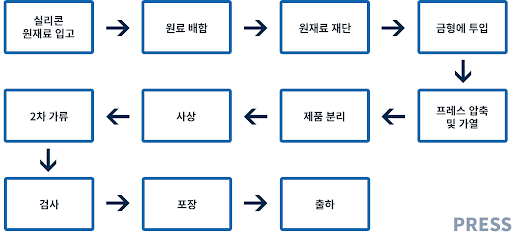
*distillation: 증류탑을 유닛으로 한다. 상대 휘발도(끓는점)의 차이를 이용하여 액체 상태의 혼합물을 분리하는 방법으로, 화학공학에서 많이 쓰이는 unit operation 의 예시이다.
*separation: separator를 유닛으로 한다. 혼합물에서 특정 물질을 분리해내는 장치로, 효율적인 분리를 위해서는 orthogonal principle(겹치지 않는 분류법을 적용하는 것)이 요구된다. 증발로 먼저 분리를 했다면, 다음은 증발말고 다른 분류법을 적용하라는 얘기이다.
Ch3. mathematical analysis
unit operation을 배치하는 것이 Design이고 이러한 공정흐름도에서 시간 ,노력, 비용 효율성을 따지는 것이 분석(Analysis)이다. 좋은 Design을 얻는 가장 좋은 방법은 많은 Design을 고안해 가장 좋은 것을 선택하는 것이다. Ch2에서 만든 수많은 디자인 중 가장 우수한 디자인 선택을 위해서는 디자인을 분석하고 평가할 줄 알아야 한다. 이를 위한 3가지 분석방법이 존재한다.
(mathematical analysis/ graphical analysis/ dimensional analysis)
이번 단원에서는 mathematical analysis를 배울 것이다. 이는 물리적 현상을 수치화하거나 모델로 만들어서, 법칙에 근거하여 시스템의 행동을 예측하는 방법이다. 간단히 수식을 통해서 분석하는 것은 수학적 분석이다.
Ch4: graphical analysis
위에서 언급한 3 분석 중 하나로, 실험을 통해 얻은 그래프를 이용해서 경험적으로 공정을 분석하는 방법이다. 이는 방정식을 이용한 분석 시 필요한 몇몇 변수를 알지 못하거나, 방정식의 전제조건을 만족하지 못하는 상황에서 공정을 분석할 때 유용하다.
Ch5: dimensional analysis 시스템을 구성하는 변수를 적절히 그룹화하여 무차원 그룹을 생성하고, 이를 통해 시스템 분석을 단순화하는 방법이다. 예를 들어 진자가 움직이는 주기는 매 달린 추의 질량(m), 줄의 길이(𝑙), 중력가속도(g), 진폭(𝛼) 등의 영향을 받는 것으로 보인다. 이때 각각의 단위는 M,L, L/T2,(None) 이다. 이때, 변수들 간의 곱과 나누기를 통해 몇 가지 변수를 무 차원 변수로 만들 수 있다. 차원해석을 거치면 진자의 주기는 𝑡𝑝=2𝜋( 𝑙 𝑔 )2로 나타난다. 이는 설정한 변수에서 추의 질량과 진폭에 대한 것을 생각하지 않아도 됨을 의미한다. 이렇게 차원을 없애고 변수를 줄여 모델의 해석을 간단하게 하는 방법이 차원 분석이다.
여기는 얘기를 들어도 뭔가 잘 모르겠는 느낌이 있다. 그래서 예시를 가지고 3, 4, 5의 분석을 살펴볼 것이다.
*흡착을 통한 mathematical analysis/ dimensional analysis의 이해
흡착은 물질이 표면에 들러붙는 것으로, 이때 흡착량은 Langmuir isotherm curve로 나타낼 수 있다. 이는 Langmuir가 제시한 흡착의 거동을 나타내는 등온선 그래프이다.
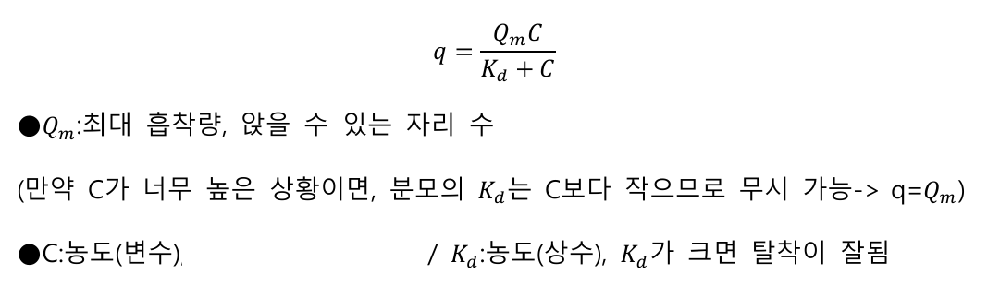
이 식을 이용해서 공정을 설계할 때 변수를 조정해서 얼마만큼 흡착이 되는지를 알 수 있다. 이렇게 식을 사용해서 공정을 분석하는 것이 mathematical analysis 이다.
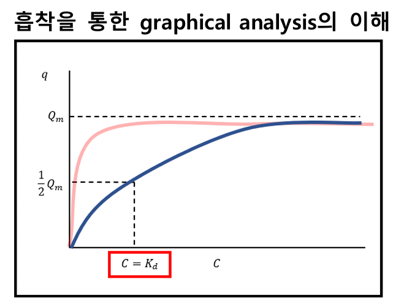
-Langmuir isotherm curve 식에 q=1/2 𝑄𝑚을 대입하면 𝐶=𝐾𝑑가 된다.
-또한, C가 0에 가까울 때는 𝑞=(𝑄𝑚/𝐾𝑑 ) 𝐶 의 직선 모양으로 그래프가 도시된다.이때 𝐾𝑑가 낮을수록 직선의 기울기가 높아진다. 따라서 커브가 직사각형에 가까울수록 높은 *흡착 특성을 가진다는 것을 알 수 있다.
(*Adsorbent의 특성을 바꾸면 유인효과를 높여 𝐾𝑑값을 낮출 수 있다. 이는 흡착 을 더욱 잘되게 하고, C가 조금만 높아져도 𝐾𝑑를 무시할 수 있게 된다. 따라서 더 빠르게 최대 흡착량을 채울 수 있다) 이처럼 그래프의 모양만 봐도 다양한 것들을 알 수 있다. 이렇게 데이터를 이용 하여 공정 분석을 하는 것이 graphical analysis이다.
다음 두 모기 흡착제의 특징을 설명해보자.
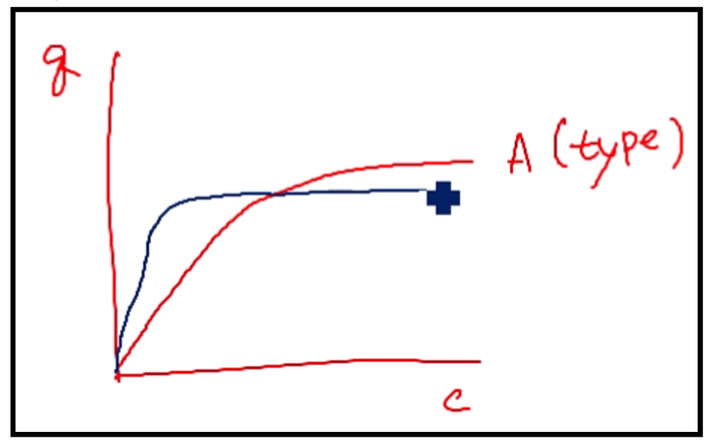
A타입은 𝑄𝑚값이 높아서 많은 모기를 잡을 수 있다. 그러나 𝐾𝑑값 또한 높아서 최 대 흡착량에 도달하기 위해서는 모기가 많아야 한다. 두 그래프가 만나는 점의 오른쪽 부분(즉, 모기가 많을 때)에서는 A타입이 효과가 좋을 것이다.
B타입은 𝑄𝑚값이 상대적으로 작아서 잡을 수 있는 최대 모기 수는 낮다. 하지만 K𝑑값이 작아서 붙잡힌 모기가 탈착되어 빠져나가지 않는다. 따라서 모기의 수가 적다면(두 그래프가 만나는 점의 왼쪽 부분), q값(흡착량)이 A타입보다 높으므로 모기를 잡는 능력이 상대적으로 높다.
정리- 흡착식을 이용하여 흡착을 설명하는 것: mathematical analysis
이제 흡착을 통해 차원분석이 뭔지 알아보도록 하자.
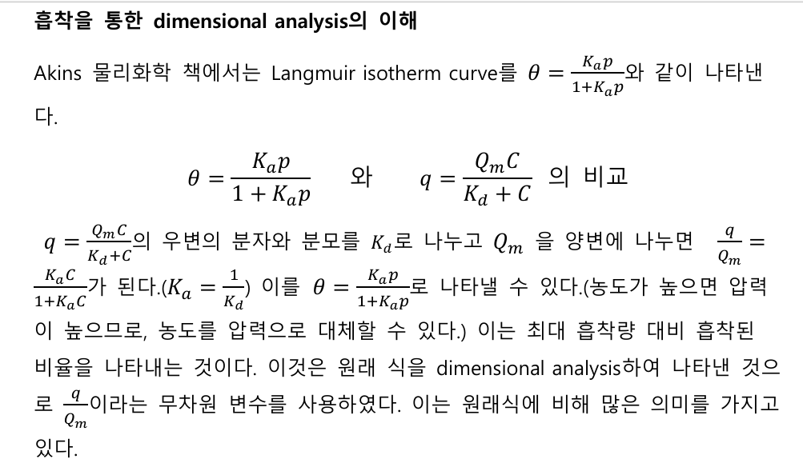 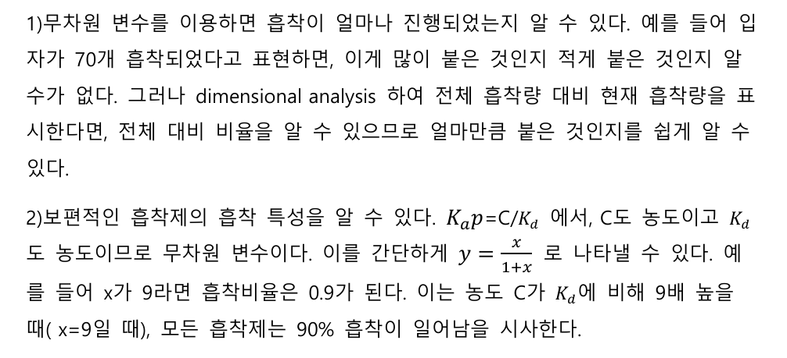
위에 언급했었던 접착제 타입 A와 타입 B를 dimensional analysis 해보자.
1.실험을 통해 A와 B의 농도에 따른 흡착량 데이터를 얻어내었다.
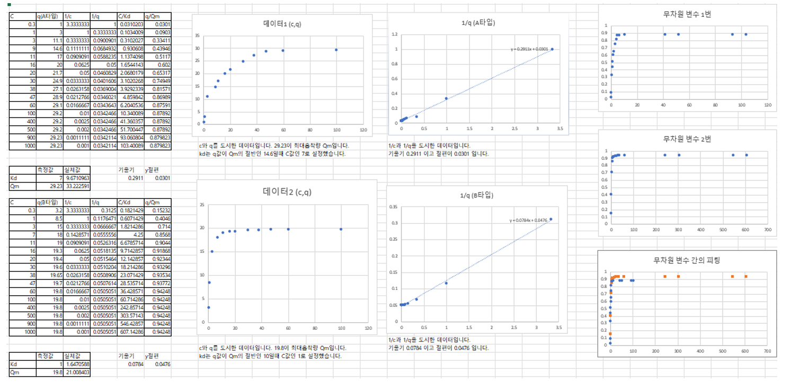
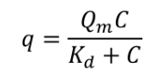
A는 최대흡착량 Qm= 29.23이고 Kd=7이다.
B는 최대흡착량 Qm=19.8이고 Kd=1이다.
A는 매우 많이 붙지만 그만큼 탈착이 잘되고, B는 최대흡착량은 적으나 탈착이 잘 안되는 특성을 가진다.
\
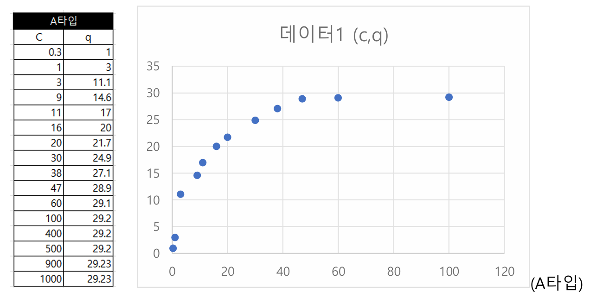 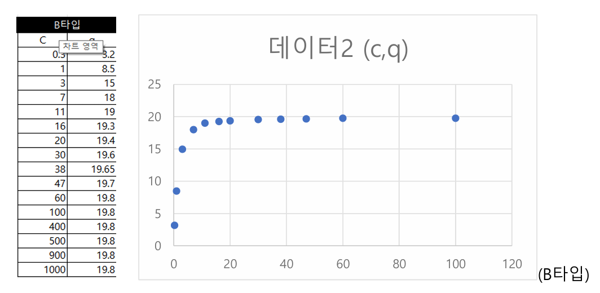
이제 이걸 무차원 변수화할 것이다.
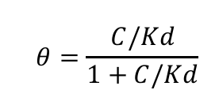
C/Kd와 q/Qm는 각각 무차원 변수이다. 이에 대한 데이터를 도시하면 다음과 같다.
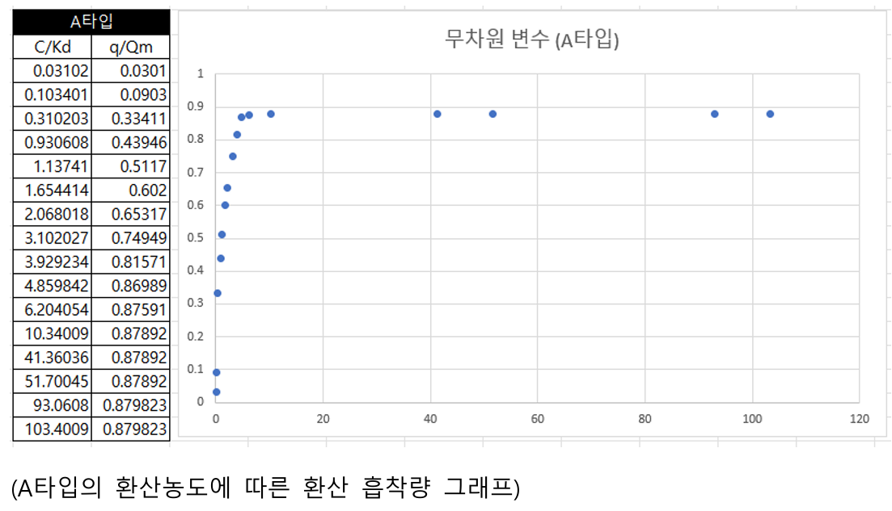 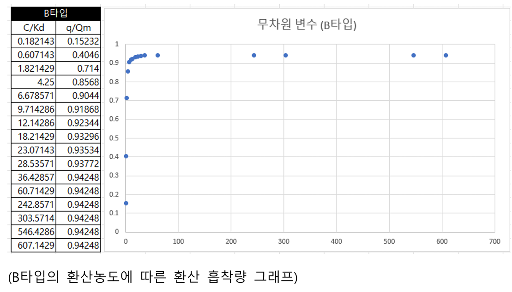
이렇게 나타내면 평형 상태의 용액(또는 기체)의 농도 C와 탈착상수 kd의 비율에 따라 전체중 몇%가 흡착될지 알아보기 쉽다. 당연히 C값이 늘어날 수록 흡착 %도 높아질 것이다.
이제 A와B에 어느 정도 보편적인 흡착특성이 성립하는 지 알아보자.
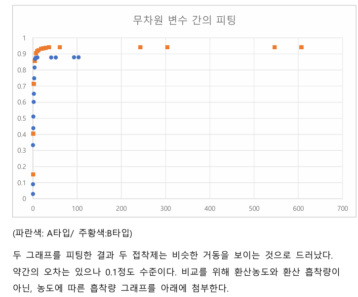
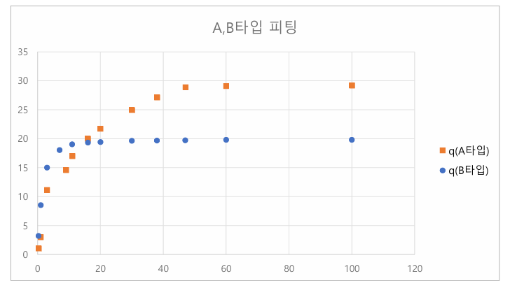